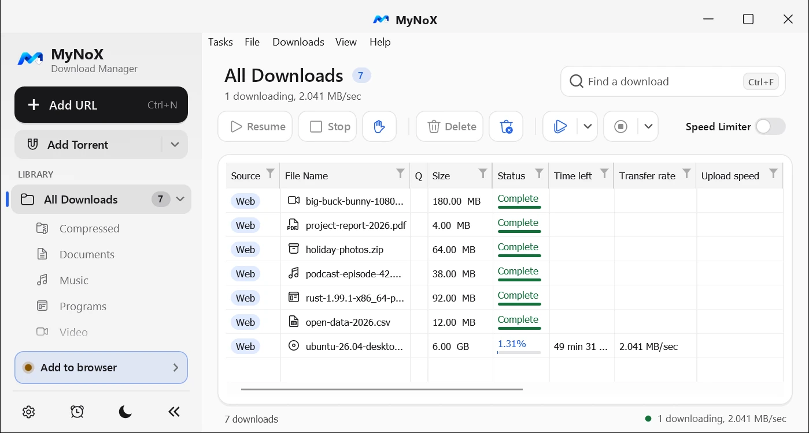
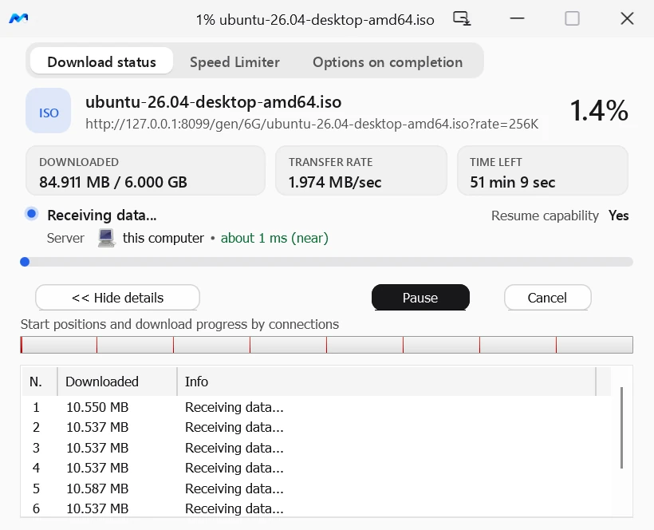

Faster downloads
Up to 32 connections per file, rebalanced as parts finish, with a per-download and global speed limiter.
MyNoX splits every file over up to 32 connections, resumes after the internet or the power cuts out, catches the links you click in your browser, and saves videos and torrents. No ads, no trial, no sign-up.
Windows 10 & 11 · 64-bit · Free and open source (GPL-3.0)

Features
Built in Rust for speed and stability, laid out the way people who manage many downloads expect.
Up to 32 connections per file, rebalanced as parts finish, with a per-download and global speed limiter.
Broken downloads pick up where they stopped, even after a restart or a dropped connection.
Chrome, Edge, Brave, Opera, Vivaldi and Firefox hand their downloads to MyNoX, with a right-click menu too.
A Download video button on YouTube and many other sites: whole playlists, subtitles, the quality you pick.
Per-torrent limits, file selection, RSS feeds and a blocklist, in the same list as your other downloads.
Download overnight, then shut down, sleep or hang up. Several queues, each on its own schedule.
Every link of a page or a whole site, filtered by type, with archives unpacked for you when they arrive.
Help, then Check for updates installs a new release only after checking its signed checksums.
MyNoX Choice
The default look is MyNoX Choice: a calm graphite and white layout that keeps every command one click away.

Browser extension
The extension comes inside MyNoX. Open Tasks, then Browser extension, and click Add it now: MyNoX opens the extensions page and copies the folder for you.
MyNoX opens your browser's extensions page and copies the extension's folder.
Then click Load unpacked on the page that just opened.
Press Ctrl + V in the folder box and click Select Folder. MyNoX says Connected.
Works with Chrome, Edge, Brave, Opera, Vivaldi and Firefox.
Download
Free for Windows 10 and 11, 64-bit.
Installs MyNoX, sets up browser integration, and keeps your settings across updates.
Download setupUnpacks into any folder or USB stick, keeps its data beside it, and writes nothing to the registry.
Download portableWindows protected your PC? A new download can show this. Click More info, then Run anyway.
Check the file. Every release has a signed SHA256SUMS.txt; compare with Get-FileHash in PowerShell.
FAQ
Yes. MyNoX is free and open source under the GPL-3.0 licence: no ads, no trial, no account, and no features held back.
64-bit Windows 10 and Windows 11.
MyNoX checks GitHub for a new release. Help, then Check for updates downloads it, checks its signed checksums, and installs it in place, the portable copy included.
Yes. View, then Theme lists Classic and ten more themes. MyNoX Choice is the default for new installs only; an existing install keeps its theme.
Firefox keeps an add-on Mozilla hasn't signed until it closes. Firefox Developer Edition, Nightly and ESR can keep it for good.
On GitHub, with the user guide, the changelog and the issue tracker.
One setup, under 20 MB. Your settings stay across every update.